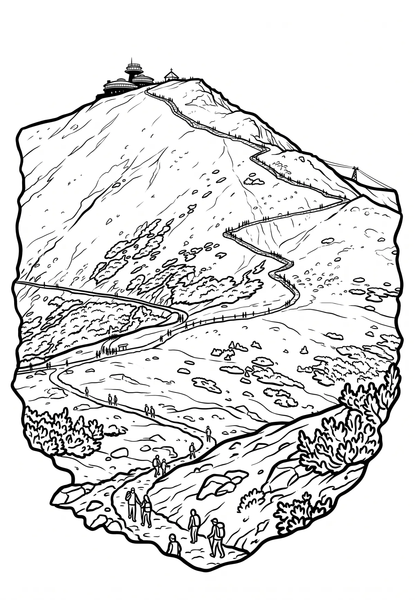

Sněžka
Královéhradecký kraj · 1603 m n. m.

přírodní památka · #074
Sněžka (polsky Śnieżka, německy Schneekoppe) je se svými 1603 m (dříve uváděný údaj 1602 m) nejvyšší horou Krkonoš, Slezska, Čech, i celého Česka. Vzhledem k tomu, že vrchol Sněžky leží v Polsku, je nejvyšším vrcholem ležícím uvnitř hranic Česka tedy Luční hora vysoká 1556 m. Sněžka je významná dominanta východní části Krkonoš.